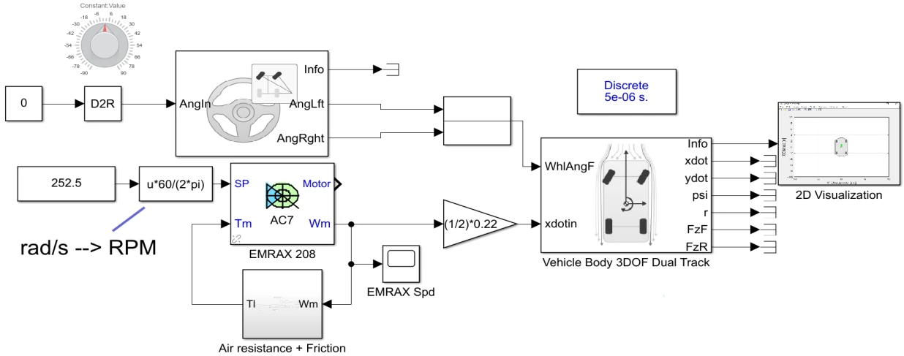
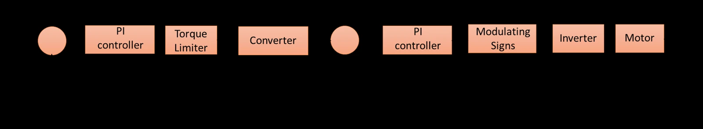
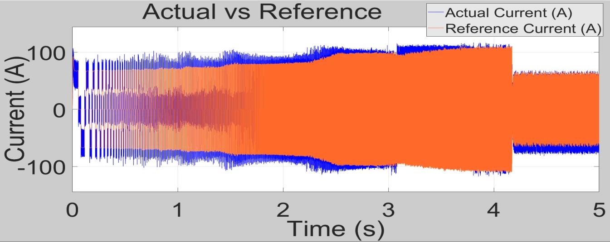
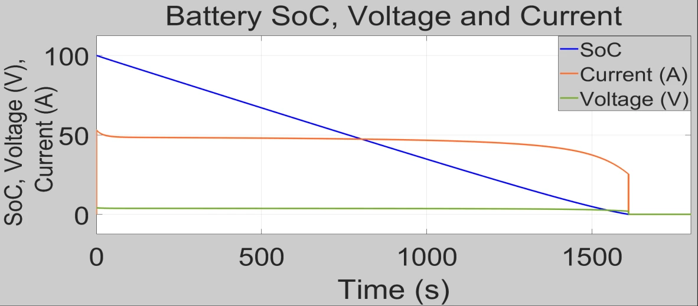
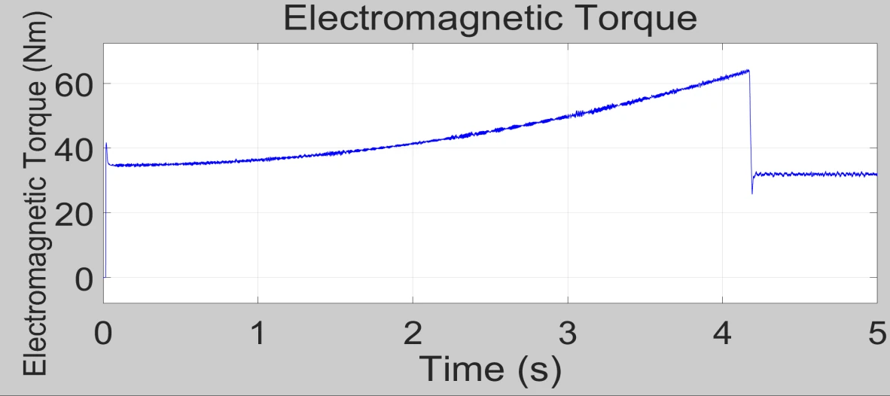

MEng Individual Project · Lancaster University · 2019–20
Formula Student EV Powertrain Model
A MATLAB and Simulink model of Lancaster e-Racing's electric powertrain, built to check the motor, controller and battery were safe and to predict the acceleration run before the car was tested.

- 80 m+Distance covered in 5 s in the simulated acceleration event, against a target of 75 m in under 5 s
- <200 AMotor current at maximum power, inside the motor controller's rating
- 378 VAccumulator: 90 lithium-ion cells in series
- ~26 minBattery life at a constant 55 A load, enough for every acceleration run without recharging
Why the team needed it
Lancaster e-Racing builds an electric Formula Student car, but no one had modelled its powertrain since 2017, and the team had run into electrical problems. I set out to model the motor, controller and battery from the datasheets and the team's 2019 report, check every component stayed inside its rating, and predict the 75 m acceleration event before the car was tested. Individual third-year project, MEng Mechanical Engineering, 2019–20.
Motor and controller
The car uses an EMRAX 208 brushless DC motor with a BAMOCAR D3 motor controller. The controller runs PI control on both speed and current, but Simulink's motor drive block uses hysteresis current control, so I built a PI current controller to match the real hardware. Its output is turned into PWM gate signals for the IGBT inverter.

- Filtering current noise: I measured the ripple frequency in the unfiltered current, then added a discrete low-pass filter at 550 Hz with a 20 µs sample time. Too low a cut-off hurts control, so the value was a compromise between noise and stability.
- Tuning: I adjusted the speed and current controller gains over many runs until the motor current stayed stable and below the controller's 200 A rating.

Battery
The accumulator is 90 lithium-ion cells in series, giving 378 V. The car has no regenerative braking, so I modelled it as a discharge circuit, with a constant 55 A load taken from the motor model.

- Acceleration event: four runs of about 6 s use only around 24 s of that, so the car would not need to go back to the garage to recharge.
- Endurance event: at the motor's 80 kW maximum the battery would not last, so I recommended running at its 35 kW continuous rating, trading performance for range.
Acceleration event
Using the Simulink vehicle dynamics blocks, I connected the motor to a longitudinal vehicle model through the gear ratio, with aerodynamic drag and rolling resistance, and sized it from the team's 2019 car.

The car covered just over 80 m in 5 s, so the model predicts it can complete the 75 m event in under 5 s.
Checks against the hardware ratings
| Component | Rating | Result in the model |
|---|---|---|
| Motor controller (BAMOCAR D3) | 200 A | Below |
| IGBT switch | 600 A | Below |
| Accumulator fuse | 360 A | Below |
| Motor torque (EMRAX 208) | 140 N·m | Below |
What I'd do differently
- Use Simscape Electrical and Driveline instead of SimPowerSystems, which slowed the simulations a lot.
- Improve the current controller. It generates the right signals, but the current overshoots its reference at the start, so it is not yet clear how much it stabilises the current.
- Add suspension with Simscape Multibody, to look at bumps and cornering, not just straight-line acceleration.
Supervisor's feedback
“This was a very well managed project and demonstrates significant design ability.” The same model-first approach carried through to my MSc driver-in-the-loop simulator.
Tools: MATLAB, Simulink, SimPowerSystems, Simulink vehicle dynamics blocks
← All projects